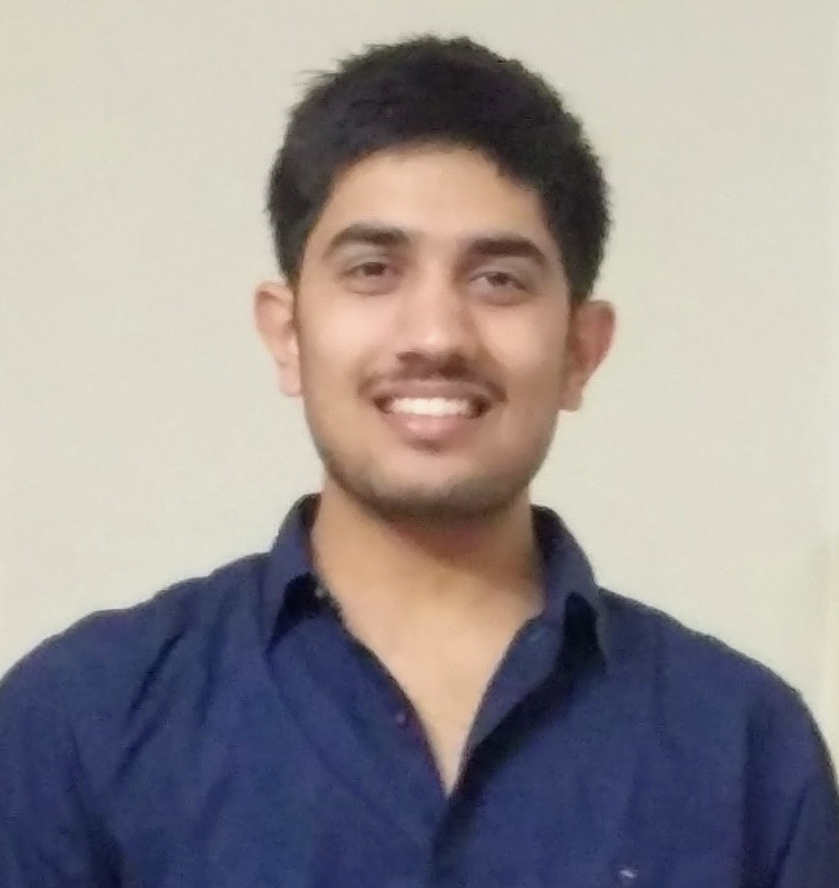
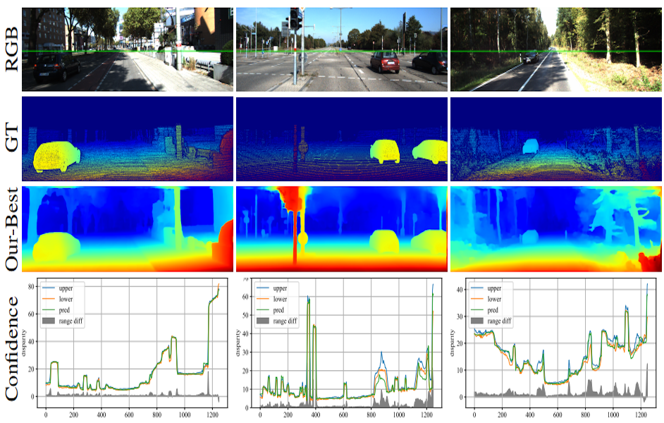

|
Shivam Duggal Research Scientist Uber ATG, Toronto Email: shivamduggal.9507 [at] gmail.com Twitter | Github | Google Scholor I am looking for Ph.D. position for 2020. |
 |
About Me
Currently, I am working as a Research Scientist at Uber ATG, Toronto, where I am advised by Professor Raquel Urtasun. I obtained my Bachelor's degree in Computer Science from Delhi Technological Unviersity, India (DTU, formerly DCE) in August 2017.My general research interests are computer vision, robotics and machine learning.
Highlights
- July 2019: Our paper DeepPruner got accepted to ICCV 2019.
- Nov 2018: Our paper Online Video Summarization got accepted to WACV 2019.
- Aug 2018: Joining Uber ATG Toronto as AI Resident (advised by Prof. Raquel Urtasun)
- Aug 2017: Graduated from DTU, joining Amazon India as SDE.
- Dec 2016: ACM ICPC India Finalist (National Rank 28)
Publications
|  | |

|
Online Video Summarization: Predicting Future to Better Summarize Present
Shamit Lal*, Shivam Duggal*, Indu Sreedevi (*= Equal Contribution) WACV 2019 [paper] |